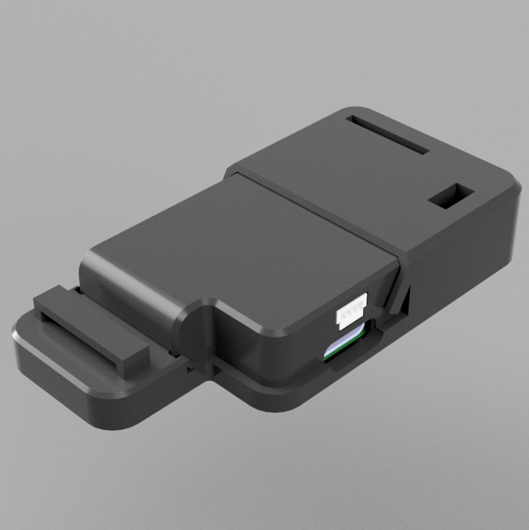
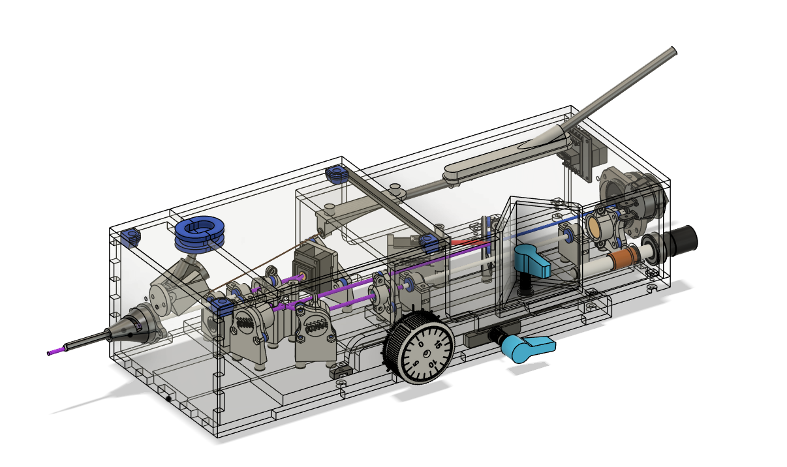

Neuro-FLux
Compact wearable that monitors blood flow in the brain • M.S. thesis + ongoing research, CMU
Thesis prototype: 36.14 dB SNR, on par with a commercial system

Biomedical Engineer
I build wearable biomedical hardware end to end: PCB design, STM32 firmware, and the signal processing that turns raw sensor data into a usable measurement.
M.S. Carnegie Mellon '26 • Seeking full-time roles from January 2027 • Open to relocation
I'm a computational biomedical engineer. I like owning the whole path from sensor to software: picking the photodetector, laying out the board, writing the firmware, and proving the signal holds up against a commercial reference. My M.S. thesis at Carnegie Mellon was Neuro-FLux, a compact wearable that monitors blood flow in the brain, and I'm continuing that work as a Research Associate through December 2026. Before that I built optomechanics for an award-winning OCT ear endoscope and interactive VR/AR systems at UC Riverside.
Two flagship engineering projects, my interactive VR cipher machines, and a gallery of CAD work. Each card opens a short case study.

Compact wearable that monitors blood flow in the brain • M.S. thesis + ongoing research, CMU
Thesis prototype: 36.14 dB SNR, on par with a commercial system

Handheld OCT & vibrometry endoscope for diagnosing hearing loss • UCR senior design
NIH DEBUT Challenge 2nd Prize

Interactive VR Enigma and arcade-style cipher machine, with 3D models you can rotate in the browser
Demoed live to 60+ students

Gallery of standalone CAD work: optical holders, lab hardware, and custom prints
Designed, printed, and iterated
Ran EEG motor-imagery experiments, then built a bandpass + Common Spatial Patterns pipeline and a Random Forest classifier. F1-score rose from 50.9% to 78.8%.
Led development of AR behavioral tasks on Magic Leap 2, using hand tracking so participants could complete tasks naturally.
Console tool that turns print time and filament use into minimum and recommended prices, with saved settings and CSV job logs for a small print business.
Hiring for embedded, biomedical device, or neurotech roles? I'd love to hear from you. Send a message below and it goes straight to my inbox.